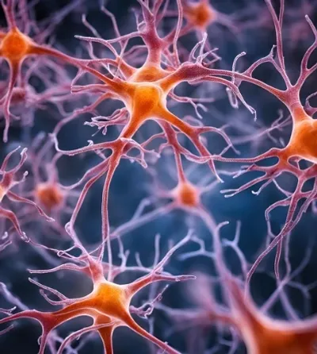

What Happens in the Brain During Depression?
 Building on the previous discussion, we now explore the biological mechanisms that link depression and immune response, particularly focusing on CD4+ T cells and brain-derived neurotrophic factor (BDNF).
CD4+ T Cells and Depression
CD4+ T cells are a subset of T lymphocytes that play a crucial role in the immune system, particularly in orchestrating immune responses. Recent studies have highlighted that these cells are not only involved in traditional immune functions but also in neuroinflammation and neuroimmunological interactions. In the context of depression, there is evidence suggesting that chronic inflammation, which involves CD4+ T cells, can influence the development and progression of depressive symptoms.
Inflammatory Pathways
Depression has been linked to increased levels of pro-inflammatory cytokines and immune activation. CD4+ T cells can produce these cytokines, contributing to systemic inflammation. This inflammation can affect brain function and mood regulation, potentially leading to or exacerbating depressive symptoms.
Immune-to-Brain Signaling
Immune cells, including CD4+ T cells, can interact with the central nervous system through various mechanisms. They can influence neuroplasticity and neurogenesis, processes that are often disrupted in depression.
Brain-Derived Neurotrophic Factor (BDNF) and Depression
BDNF is a protein that supports the survival, growth, and differentiation of neurons. It is crucial for synaptic plasticity and cognitive functions such as learning and memory. BDNF levels in the brain are often reduced in individuals with depression, which is thought to contribute to the neurobiological abnormalities seen in this disorder.
Neuroplasticity
BDNF promotes neuroplasticity, which is essential for adapting to new experiences and recovering from stress. Reduced BDNF levels are associated with impaired neuroplasticity, which is a hallmark of depression.
Antidepressant Action
Many antidepressant treatments are known to increase BDNF levels. This suggests that part of their therapeutic effect might be mediated through enhancing neuroplasticity and counteracting the deficits in BDNF observed in depression.
Interaction Between CD4+ T Cells and BDNF in Depression
The interaction between CD4+ T cells and BDNF in depression is a developing area of interest. Here are some potential mechanisms and hypotheses:
Inflammation and BDNF Levels
Chronic inflammation, driven in part by CD4+ T cells, can reduce BDNF levels. Pro-inflammatory cytokines can negatively impact BDNF expression and signaling, thereby contributing to the neurobiological changes seen in depression.
Immune Modulation of Neuroplasticity
CD4+ T cells might influence neuroplasticity directly or indirectly by affecting BDNF levels. For example, elevated pro-inflammatory cytokines from CD4+ T cells could impair neurogenesis and reduce BDNF production, leading to depressive symptoms.
Therapeutic Implications
Understanding this interaction could have implications for developing new treatments. For instance, targeting immune pathways involved in inflammation or modulating CD4+ T cell activity might help restore BDNF levels and improve depressive symptoms.
If you would like to read more in-depth about this study, check our publication here.